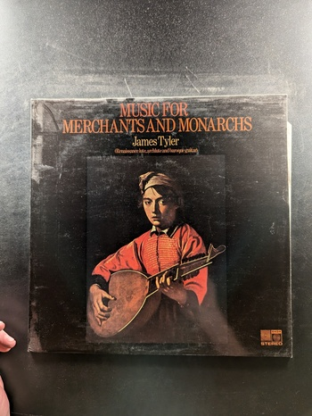

Flute & Guitare
Christian Lardé / Turibio Santos
Erato STU 71127

Rodrigo: Concierto de Aranjuez for Guitar & Orchestra / Giuliani: Concerto in A for Guitar, Strings & Timpani
Rafael Frühbeck de Burgos, Alirio Diaz
Angel S-36896
Recorder & Guitar / Blockflöte & Gitarre
Clas Pehrsson, Cecilia Peijel
BIS LP-183 STEREO
The Classical Brazilian Guitar
Maria Livia Sao Marcos
Everest 3236
Art of the Rococo: Works for Guitar and Piano
Mario Sicca, Rita Maria Fleres
MHS 1651
The English Chamber Orchestra
Liona Boyd, Andrew Davis
CBS Masterworks M 34583
Twelve Sonatas
Domenico Scarlatti
MHS 3735
Lute, Guitar and Organ
Various Artists
The Musical Heritage Society, Inc. MHS 1120
Five Centuries of French Guitar Music
Turibio Santos
Musical Heritage Society Inc. MHS 1916
Sonatas by Arcangelo Corelli
Arcangelo Corelli
The Musical Heritage Society Inc. MHS 819
Six Sonatas for Cello and Harpsichord
Antonio Vivaldi
Musical Heritage Society Inc. MHS 3021
Recital
Carlos Montoya
Request Records SRLP 2028
Trumpet Concerto in D Major, Viola Concerto in G Major, Concerto in C Major, Concerto in E Minor, Concerto in D Minor
Georg Philipp Telemann
Musical Heritage Society MHS 1512
Flamenco Fury
Carlos Montoya
Everest 3263
Itinerario di Musica Antica
Unknown
Unknown Unknown
The Art of the Lute, Vol. 2
Walter Gerwig
RCA Victrola VICS-1408
My Lute Awake!
Anthony Rooley and James Tyler
L'Oiseau-Lyre DSLO 8
Sonatas for Lute by Sylvius Leopold Weiss
David Rhodes
Cambridge Records CRS 2303
36 Dances from the Tablature of Jan of Lublin
Pöhlert Lute Ensemble
The Musical Heritage Society Inc. MHS 1420
Pièces de Théorbe de Luth et de Guitare
Nigel North
Florilegium Series DSLO 593

O Vilanella
The Consort of Musicke
L'Oiseau-Lyre
The English Lute
Paul O'Dette
Nonesuch H-71338
Music for Merchants and Monarchs
James Tyler
Saga
Renaissance Duets
Anthony Rooley and James Tyler
L'Oiseau-Lyre

Officium Defunctorum; Three Motets
Tomas Luis De Victoria
Musical Heritage Society MHS 3352
St. Matthew Passion
Lasso
Dover 97266-2
{kind=link}

{kind=link}
{kind=link}
{kind=link}
{kind=link}
{kind=link}
{kind=link}
{kind=link}
{kind=link}
{kind=link}
{kind=link}
{kind=link}
{kind=link}
{kind=link}
{kind=link}
{kind=link}
{kind=link}
{kind=link}
{kind=link}

{kind=link}
{kind=link}
{kind=link}

{kind=link}